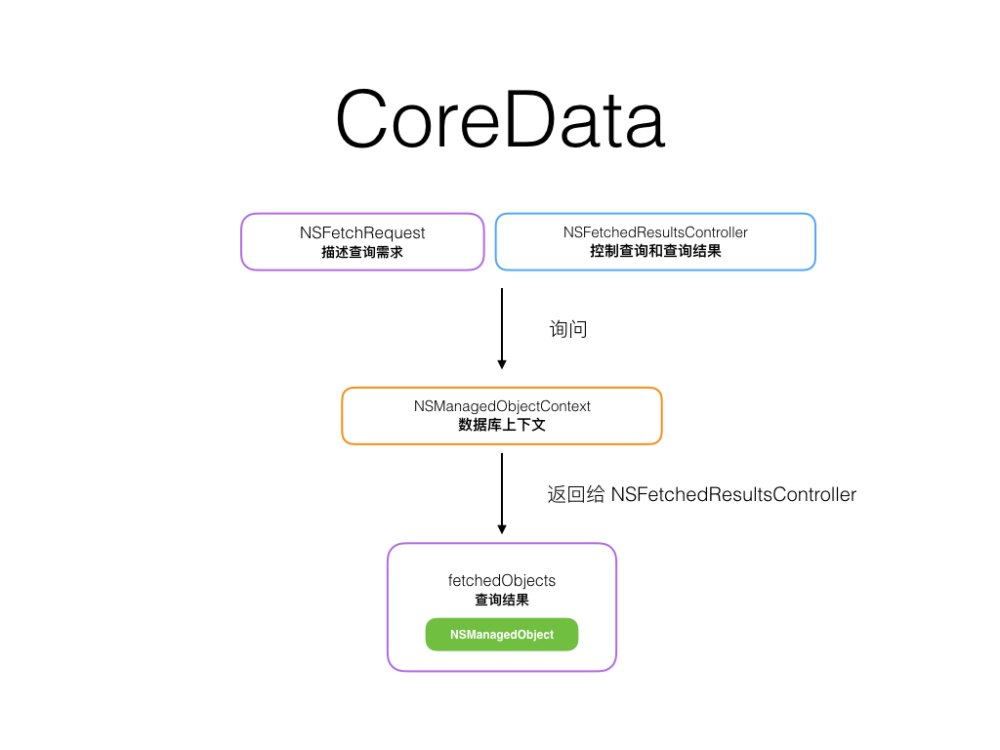

浏览主要涉及到三个方面，查询，分类，展示。
存了这么多日记，早就想读取出来看看了，进入 HomeCollectionViewController，添加以下属性
var diarys = [NSManagedObject]()
var fetchedResultsController : NSFetchedResultsController!
var yearsCount: Int = 1
var sectionsCount: Int = 0
查询 CoreData 的查询逻辑很好理解

在 viewDidLoad 中添加如下代码
do {
// 查询 CoreData 的 Diary 数据
let fetchRequest = NSFetchRequest(entityName:"Diary")
// 设置按照创建时间的升序排序
fetchRequest.sortDescriptors = [NSSortDescriptor(key: "created_at", ascending: true)]
// 初始化 NSFetchedResultsController 并根据 year 分成不同的 section
fetchedResultsController = NSFetchedResultsController(fetchRequest: fetchRequest,
managedObjectContext: managedContext,
sectionNameKeyPath: "year",
cacheName: nil)
//开始尝试查询
try self.fetchedResultsController.performFetch()
if (fetchedResultsController.
fetchedObjects!.count == 0){
print("Present empty year") // 没有任何查询结果
}else{
// 根据 sections 来判断 year 的数量
if let sectionsCount = fetchedResultsController.sections?.count {
yearsCount = sectionsCount
diarys = fetchedResultsController
.fetchedObjects as! [NSManagedObject]
}else {
sectionsCount = 0
yearsCount = 1
}
}
} catch let error as NSError {
debugPrint(error)
}
分组已经由 NSFetchedResultsController 帮我们自动完成，那么接下来就是在年、月界面正确的显示。
年的数量
override func collectionView(collectionView: UICollectionView,
numberOfItemsInSection section: Int) -> Int {
return yearsCount
}
年的 Cell 配置
override func collectionView(collectionView:
UICollectionView,
cellForItemAtIndexPath indexPath: NSIndexPath) ->
HomeYearCollectionViewCell {
let cell = collectionView.
dequeueReusableCellWithReuseIdentifier(reuseIdentifier,
forIndexPath: indexPath)
as! HomeYearCollectionViewCell
// 格式化日期
let components = NSCalendar.currentCalendar().
component(NSCalendarUnit.CalendarUnitYear,
fromDate: NSDate())
var year = components
if sectionsCount > 0 {
if let sectionInfo = fetchedResultsController.
sections![indexPath.row] as?
NSFetchedResultsSectionInfo {
print("Section info \(sectionInfo.name)")
year = sectionInfo.name!.toInt()!
}
}
cell.textInt = year
cell.labelText = "\(numberToChinese(cell.textInt)) 年"
// Configure the cell
return cell
}
点击年的时候
override func collectionView(
collectionView: UICollectionView,
didSelectItemAtIndexPath indexPath: NSIndexPath)
{
let identifier = "DiaryYearCollectionViewController"
let dvc = self.storyboard?.
instantiateViewControllerWithIdentifier(identifier)
as! DiaryYearCollectionViewController
let components = NSCalendar.currentCalendar().
component(NSCalendarUnit.CalendarUnitYear,
fromDate: NSDate())
var year = components
if sectionsCount > 0 {
if let sectionInfo = fetchedResultsController.
sections![indexPath.row] as?
NSFetchedResultsSectionInfo {
print("Section info \(sectionInfo.name)")
year = sectionInfo.name!.toInt()!
}
}
dvc.year = year
self.navigationController!.pushViewController(dvc,
animated: true)
}
self.storyboard?. instantiateViewControllerWithIdentifier(identifier) 这个方法可以从 StoryBoard 里取出 Identifier 为 DiaryYearCollectionViewController 的实例对象。
月份采用了类似的方式实现。
月的查询略有变化
fetchRequest.predicate = NSPredicate(format:
"year = \(year) AND month = \(month)")
增加了确切的年和月份
当点击月份的某篇日记的时候，将对应的 Diary 传递过去
let identifier = DiaryViewController
let dvc = self.storyboard?.
instantiateViewControllerWithIdentifier(identifier)
as! DiaryViewController
let diary = fetchedResultsController.
objectAtIndexPath(indexPath) as! Diary
dvc.diary = diary
self.navigationController!.pushViewController(dvc,
animated: true)
你可以在 Github 找到本章的工程项目
NSFetchedResultsController Class Reference
Core Data Tutorial for iOS: How To Use NSFetchedResultsController